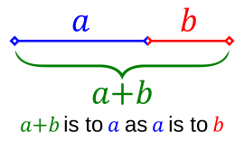

Each Rebase puzzle deals four digit strings and four number bases. You assign one base to each string, every base used exactly once, and the four resulting values must add up to a target sum. Exactly one assignment works, and you get three attempts to find it, with Wordle-style feedback after each guess. The complication is the base pool: alongside 2, 3, 5, and 10 it contains \(\varphi\), \(\sqrt{2}\), \(e\), and \(\pi\), so the same digits mean wildly different things depending on where you drop them. The string 1110 is worth 1110 in base 10, 39 in base 3, 14 in base 2, and about 8.472 in base \(\varphi\).
{kind=link}
Digits in base π
A digit string \(d_{n-1}\,d_{n-2} \cdots d_0\) in base \(\beta\) evaluates to \(\sum_i d_i\,\beta^i\). Nothing in that formula requires \(\beta\) to be an integer, and non-integer positional notation is a well-studied corner of number theory. The game's evaluation function is the same loop whether the base is 10 or \(\pi\): multiply each digit by the base raised to its positional power, and add.
What changes is the digit alphabet. Each digit must be smaller than the base, so base \(\varphi \approx 1.618\) and base \(\sqrt{2} \approx 1.414\) admit only 0 and 1, base \(e\) allows digits up to 2, and base \(\pi\) up to 3. That constraint is the first logical foothold: a card containing a 3 can only take base 5, 10, or \(\pi\). Magnitude is the second. Powers of \(\sqrt{2}\) grow slowly, so a long string assigned to a small base stays small, and a large target forces the big bases onto the long strings.
Irrational bases have stranger properties that the game gets to ignore. Since \(\varphi^2 = \varphi + 1\), the strings 100 and 011 denote the same number in base \(\varphi\), so representations are not unique. Rebase only ever evaluates a given string to a value, never writes a value back out as digits, so it sidesteps the whole question.

{kind=link}
Three guesses, two colors
You assign a base by dragging its chip onto a card, or tapping to pick up and place. The game computes each card's value live and shows the running sum, but the target itself is hidden on the first attempt. Your opening guess is guided only by digit constraints and the visible values. After the first guess the target appears rounded to the nearest integer, and the exact value, to three decimal places, arrives on the final attempt.
Feedback is per card. Green means the correct base is on this card, and the card locks for the rest of the game. Yellow means the base is wrong here, and since every base is used exactly once, wrong always means it belongs on one of the other cards. There is no gray. Solving on the first, second, or third attempt earns three, two, or one star, and the result exports as the usual grid of green and yellow squares, one row per attempt.
Generation by rejection
Puzzles come from a seeded generator: mulberry32 supplies the random stream and Fisher-Yates handles every shuffle, so a given seed always produces the same board. Around that sits a rejection sampling loop that discards candidate puzzles until one satisfies a set of fairness constraints, falling back to a direct construction only after 300 failures.
A candidate starts with four bases drawn from the difficulty's pool, then four digit strings. String generation is ceiling-aware: two or three of the cards use only digits valid in every selected base, and the rest may include digits that at least two of the bases can accept. Leading digits are never zero, and duplicate strings restart the attempt. Then comes the interesting check: the generator enumerates every assignment of bases to cards that is digit-legal and requires at least four of them to exist. With fewer, the digit constraints alone would give the puzzle away.
The target is chosen from the sums of those legal assignments. The generator walks them in shuffled order and picks one whose sum is unique among all legal assignments to within 0.0005, which guarantees exactly one correct answer even after rounding to three decimals. It also rejects any solution where two card values land within 0.05 of each other, so no two cards carry near-identical numbers.
Puzzle #192, the one in the screenshot, dealt the cards 1110, 1010, 111, and 10 against the bases 10, \(\varphi\), 3, and \(e\). The unique solution is \(1110_{10} + 1010_3 + 111_e + 10_\varphi = 1110 + 30 + 11.107 + 1.618 = 1152.725\).
One seed per day
The daily seed is the calendar date packed into an integer, YYYYMMDD, so everyone playing on the same date gets the same board, and it rolls over at local midnight. The puzzle number counts days from January 1, 2026. Difficulty follows the day of the week: Monday and Tuesday are easy, with integer bases only; Wednesday and Thursday are medium, with one irrational base joining three integers; Friday and Saturday are hard, with two of each; and Sunday is expert, with all four bases irrational and digit strings stretched to three and four digits.
Practice mode seeds a fresh puzzle from the current timestamp at whichever difficulty you pick. Challenge mode packs a seed and a difficulty index into a single number, \(4s + d\), rendered in base 36 as a six-character code you can send to a friend.
One file
The whole game is a single index.html with inline CSS and JavaScript, no framework, no build step, hosted on GitHub Pages. Drag and drop is implemented by hand on raw mouse and touch events, with a ghost element following the pointer, so one code path serves both desktop and phones. State lives in localStorage: the in-progress daily board saves under a per-date key so a reload mid-game restores your attempts, while play counts, win percentage, streaks, and the star distribution accumulate under separate keys. A timer runs from your first interaction to your last guess and rides along in the share text.